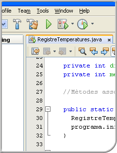

Sistemes operatius en xarxa

- Coordinació
- Anna Castelló Gistau
- Redacció
- Jordi Cárdenas Guia
- Juan José López Zamorano
- Informàtica i comunicacions
- W.CFGM.SMX.M04/0.10
- CFGM - Sistemes microinformàtics i xarxes
© Departament d'Educació
Primera edició: setembre 2010
Primera edició: setembre 2010